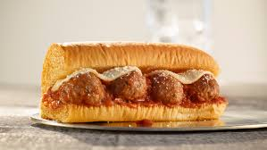

Meatball Sub

Description
These garlic butter meatball subs with toasted buns, toasted mozzarella cheese, and precooked meatballs in marinara sauce, are a quick way to a casual dinner for 6.
Ingredients
- 18 large precooked meatballs in marinara sauce
- 1/2 cup butter
- 3 cloves garlic, minced
- 3 tablespoons chopped parsley
- salt and freshly ground black pepper to taste
- 6 French bread hoagie rolls
- 1 cup Kraft creamy shredded mozzarella cheese
- freshly grated Parmesan cheese, as needed, for garnish
Steps
- Warm meatballs according to package directions. Set aside.
- Melt butter in a small saucepan over medium heat. Add garlic and continue cooking until garlic is fragrant, about 30 seconds. Stir in parsley, season with salt and pepper, and remove from heat.
- Heat a large skillet over medium-high heat. Brush insides of the rolls with garlic butter and toast, buttered side down, in the skillet until golden brown. Set aside.
- Working with 1 or 2 rolls at a time, sprinkle 1/2 cup mozzarella per roll into the skillet. Place roll face down onto the cheese and cook until cheese is melted. Set aside.
- Place 3 meatballs into each roll. Garnish with fresh Parmesan and a light drizzle of garlic butter if desired.
Home